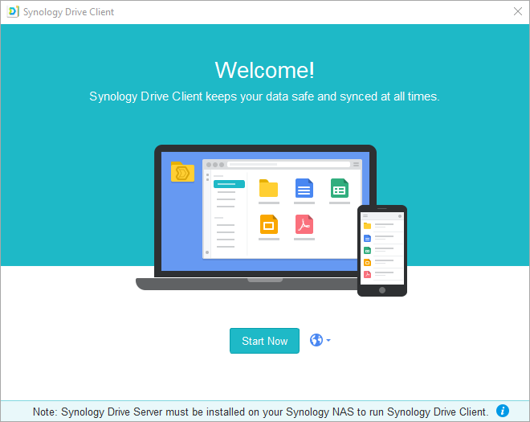
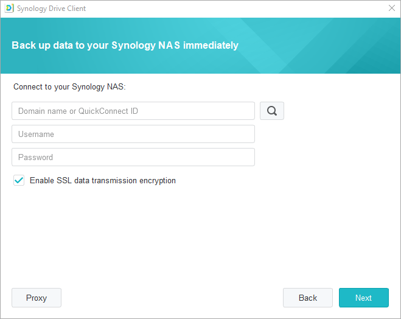
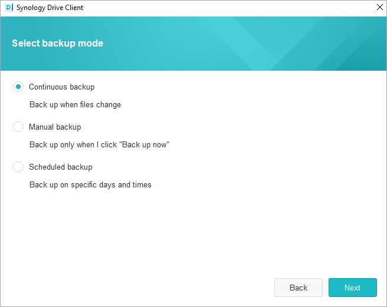
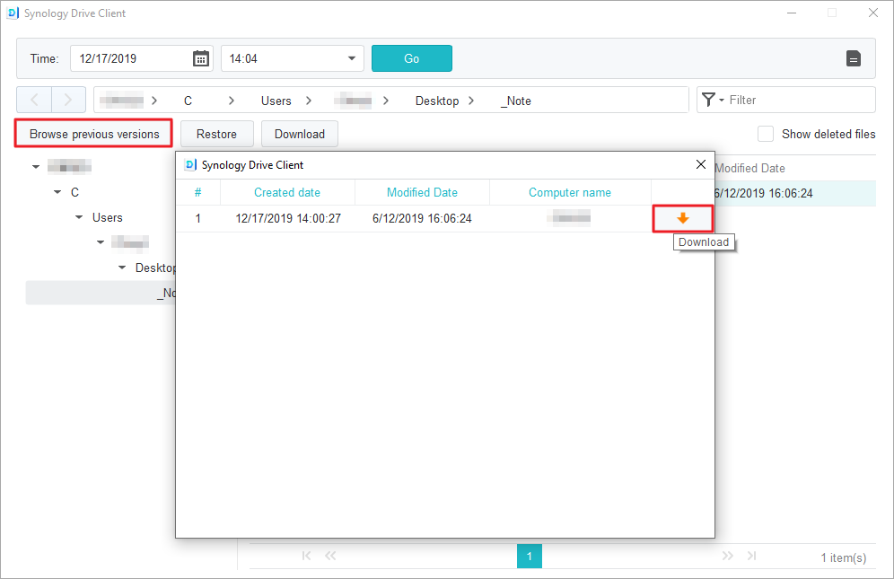

Panoramica
Synology Drive Server non è soltanto un sofisticato software di sincronizzazione fra piatteforme, ma è anche un mezzo intelligenze per eseguire il backup dei dati dai personal computer degli utenti. L'utilità desktop Synology Drive Client è una soluzione di backup immediata e in tempo reale, in grado di ottimizzare la larghezza di banda e di offrire un'eccellente protezione, con un massimo di 32 versioni cronologiche per singolo file.
Configurare Synology Drive Server in Synology NAS e scaricare Synology Drive Client
- Andare su Centro pacchetti, individuare Synology Drive Server e fare clic su Installa. Tre pacchetti, Synology Drive Admin Console, Synology Drive ShareSync e Synology Drive, saranno scaricati insieme.
- Avviare Synology Drive. Nell'angolo destro inferiore, verrà visualizzata una richiesta di download di Synology Drive Client.

Oppure, nell'angolo inferiore sinistro, fare clic sull'icona dell'utente e andare su Client > Client di download.

In alternativa, Synology Drive Client può essere scaricato da Synology Download Center. - Avviare il programma di installazione sul computer e seguire le istruzioni per installare Synology Drive Client. Al termine dell'installazione, eseguire Synology Drive Client facendo clic su Avvia ora.
 - Selezionare Backup attività.

- Inserire l'indirizzo o il QuickConnect ID per il Synology NAS che esegue Synology Drive Server, il nome utente e la password. È possibile anche fare clic sull'icona di ricerca a destra per consentire a Synology Drive Client di ricercare automaticamente un altro Synology NAS nella LAN in uso. Fare clic su Avanti.
 - Selezionare la fonte del backup e deselezionare tutte le cartelle secondarie da non sincronizzare. Synology Drive Client creerà una cartella di backup nella destinazione selezionata con il nome del computer. La cartella home sarà selezionata come cartella di destinazione per impostazione predefinita. Per utilizzare una cartella non presente nell'elenco, contattare l'amministratore di sistema. Gli amministratori del sistema possono consultare la pagina della guida di Synology Drive Admin Console. Per impostare le regole o i filtri di sincronizzazione, è possibile anche fare clic su Regole di backup. Fare clic su Avanti.

- Selezionare una modalità di backup e fare clic su Avanti.
 - Rivedere un riepilogo delle impostazioni di backup. Fare clic su Indietro per apportare eventuali modifiche oppure fare clic su Fine per terminare la configurazione.

- Nella finestra principale, è possibile visualizzare l'avanzamento del backup.

Scaricare o ripristinare una versione precedente dei file sincronizzati in Synology Drive Client
- In Synology Drive Client, andare su Attività di backup > Ripristina e individuare il file o la cartella da ripristinare.

- Scegliere il file da recuperare e fare clic Sfoglia le versioni precedenti. In caso di eliminazione o rimozione casuale di un file nel computer, fare clic su Ripristina per ripristinarlo.

- Selezionare la versione del file da scaricare e fare clic su Scarica.

Scaricare o ripristinare una versione precedente di un file sincronizzato in Synology Drive Admin Console
- In DSM, andare su Synology Drive Admin Console > Cartella del team, fare clic sulla cartella in cui eseguire il ripristino e selezionare Version Explorer.

- Nella finestra Version Explorer, fare clic sul file da recuperare e fare clic su Sfoglia le versioni precedenti.

- Selezionare la versione del file da scaricare e fare clic su Scarica. In alternativa, per ripristinare la versione selezionata, fare clic su Ripristina e la versione corrente verrà sovrascritta.

Ulteriore protezione dei dati
Per altri modi per proteggere ed effettuare il backup dei dati, fare clic qui per consultare i tutorial relativi ad altri servizi di backup offerti da DSM.